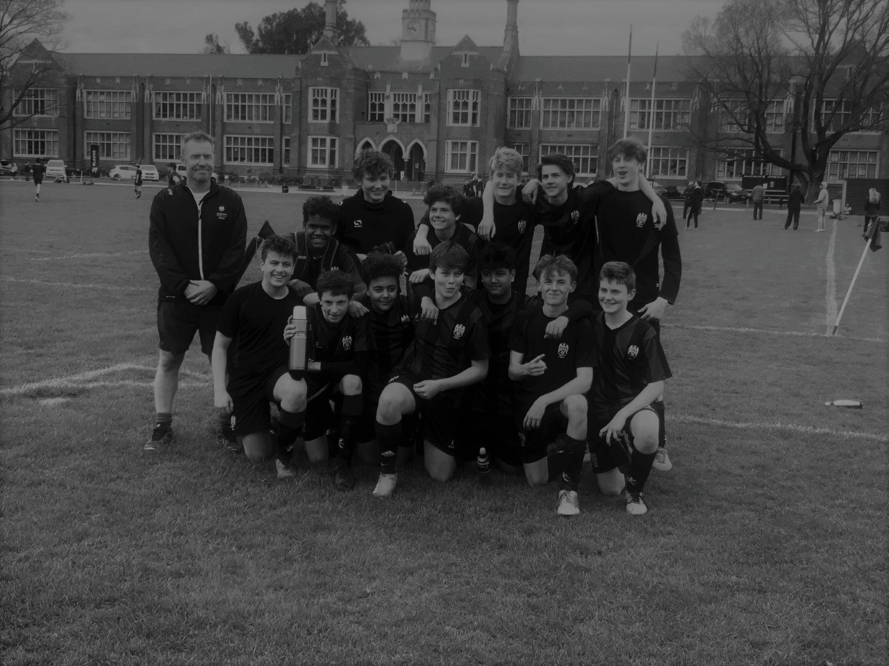

CBHS Football


The CBHS 1970 'Traditional Team'
1969 and 1970 Firsts forward Ewan McDonald proudly described how he scored 2 goals in front of CBHS goalkeeper Richard Hadlee in 1970 to bring his side to a 2-0 victory. "It was indeed a very important game as it was the first official game in a traditional series which has continued to this day and is considered very important by players of the 1st XI who consider it to be the one of their 'Test' matches. Then coach Ray Hill's game report remains. We reproduce it below. Wellington College 2 vs. Christchurch Boys High School 0 at Rongotai College, Winter 1970 This was the first game of a newly instituted regular match with C.B.H.S, although we played them twice. In the 1967 tournament we managed to achieve a 2-1 victory and in 1968 when the CBHS team was on their way to Auckland we lost 1-2. We were very happy to add the game to our annual meetings because a game against players of their caliber will offer a great challenge to our 1st XI. Luckily for us, Henry Nauta is back from the United States and had a college game under his belt before C.B.H.S. We were also greatly aided and encouraged by the Wellington weather, a howling gale and bad enough that we had to move from the Basin to Rongotai College. The polish of the C.B.H.S team, regardless of the playing conditions, was evident from the start and it was only our strongly defensive play (by necessity) and a brilliant goalkeeper from Bolt that kept them from scoring. Normal skills were difficult to apply and Wellington College's long, quick passes to the 'wings', but mostly down the middle to 'Henry', eventually paid off as the Christchurch team's defense struggled to turn on. a wet surface. An excellent cross from the right to Wayne Johanson to the far post found the mercurial McDonald perfectly positioned to come home. In the second half, the game went from start to finish, with neither team dominating. Watson came off the goal line when his goalie Bolt was beaten, then Nauta missed a session on the other end. So it continued. At the end of the second half, a ball deep in the middle again found McDonald's who calmly took the ball forward and coldly placed it in the net. It was obvious in the final stages that 2-0 would be the final score. A most enjoyable and exciting game played in miserable conditions."
Image provided with permission from Max Painter